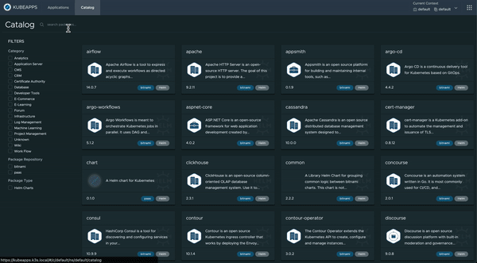
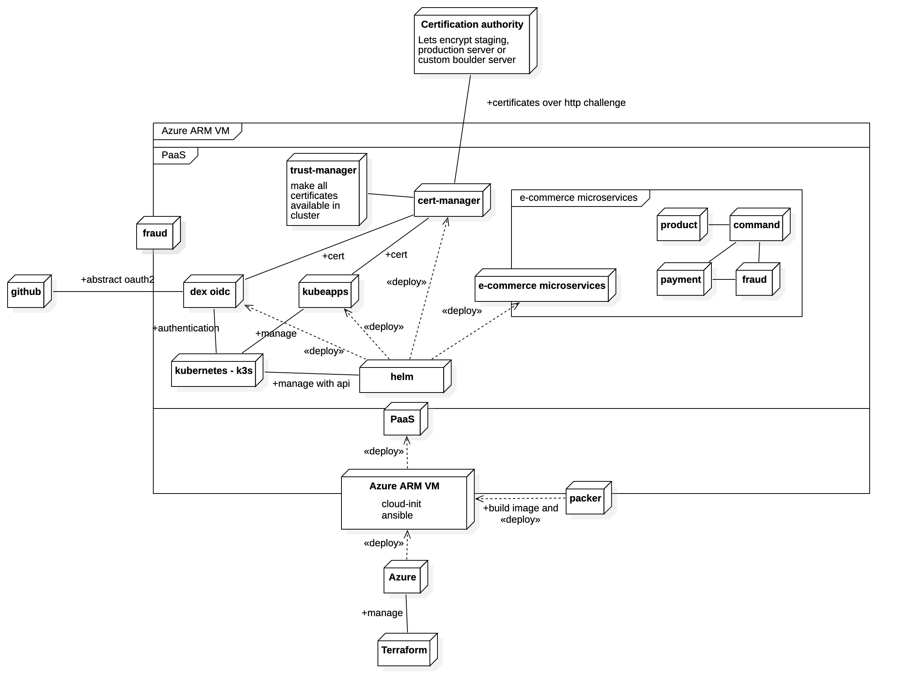

Tutoriel PaaS¶

Architecture¶

Requis pour suivre le tutoriel¶
Matériel et outils¶
- Un PC / Mac peu importe l'OS (PC risque d'être instable)
- Un compte github
- Un compte azure avec le crédit de 100$ offert pour les étudiants (avec l'email myges cela fonctionne normalement)
- Valider votre compte github student pour ne pas avoir à acheter de nom de domaine. Pour valider utilisez votre adresse mail de l'université.
- Un compte docker hub
Compétences¶
- Des bases d'administration système et réseau linux
- Algorithmie et programmation sur au moins un langage
- Des bases sur les certificats "Secure socket layer" et leur utilisation de la cryptographie asymétrique
- Connaissance du langage de configuration
yaml - Culture sur les infrastructures de déploiement multienvironnements (staging, prod)
- Connaissance des concepts d'environnements isolés linux ou containers
- L'outil de gestion de version Git l'hôte git github
Sommaire¶
- 0. Installation
- 1. Rôle ansible
- 1.1 Provisionning du paas avec ansible
- 1.2 Présentation de K3s et installation
- 1.3 Installation des manifests (algo)
- 1.4 Autorité de certification
- 1.5 Mise en place des communications réseau du cluster
- 1.6 Utiliser notre autorité avec cert-manager
- 1.7 Faire confiance à notre autorité de certification
- 1.8 Authentification et des habilitations
- 1.9 Kubeapps
- 2. Packer
- 3. Terraform / Azure